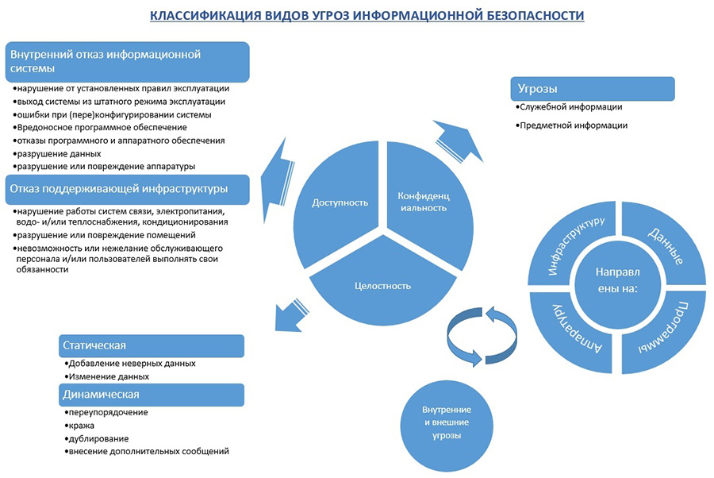

Основы информационной безопасности. Виды угроз, информация и средства ее защиты
Введение
Безопасность виртуального сервера может быть рассмотрена только непосредственно как «информационная безопасность». Многие слышали это словосочетание, но не все понимают, что же это такое?
«Информационная безопасность» — это процесс обеспечения доступности, целостности и конфиденциальности информации.
Под «доступностью» понимается соответственно обеспечение доступа к информации. «Целостность» — это обеспечение достоверности и полноты информации. «Конфиденциальность» подразумевает под собой обеспечение доступа к информации только авторизованным пользователям.
Исходя из Ваших целей и выполняемых задач на виртуальном сервере, необходимы будут и различные меры и степени защиты, применимые по каждому из этих трех пунктов.
Для примера, если Вы используете виртуальный сервер, только как средство для серфинга в интернете, то из необходимых средств для обеспечения безопасности, в первую очередь будет использование средств антивирусной защиты, а так же соблюдение элементарных правил безопасности при работе в сети интернет.
В другом случае если у Вас размещен на сервере продающий сайт или игровой сервер, то и необходимые меры защиты будут совершенно различными.
Знание возможных угроз, а также уязвимых мест защиты, которые эти угрозы обычно эксплуатируют, необходимо для того, чтобы выбирать наиболее оптимальные средства обеспечения безопасности, для этого рассмотрим основные моменты.
Под «Угрозой» понимается потенциальная возможность тем или иным способом нарушить информационную безопасность. Попытка реализации угрозы называется «атакой», а тот, кто реализует данную попытку, называется «злоумышленником». Чаще всего угроза является следствием наличия уязвимых мест в защите информационных систем.
Рассмотрим наиболее распространенные угрозы, которым подвержены современные информационные системы.
Угрозы информационной безопасности, которые наносят наибольший ущерб
- Угроза непосредственно информационной безопасности:
- Доступность
- Целостность
- Конфиденциальность
- Компоненты на которые угрозы нацелены:
- Данные
- Программы
- Аппаратура
- Поддерживающая инфраструктура
- По способу осуществления:
- Случайные или преднамеренные
- Природного или техногенного характера
- По расположению источника угрозы бывают:
- Внутренние
- Внешние
Как упоминалось в начале понятие «угроза» в разных ситуациях зачастую трактуется по-разному. И необходимые меры безопасности будут разными. Например, для подчеркнуто открытой организации угроз конфиденциальности может просто не существовать — вся информация считается общедоступной, однако в большинстве случаев нелегальный доступ представляется серьезной опасностью.
Применимо к виртуальным серверам, угрозы, которые Вам как администратору сервера, необходимо принимать во внимание это — угроза доступности, конфиденциальности и целостность данных. За возможность осуществления угроз направленных на конфиденциальность и целостность данных, не связанные с аппаратной или инфраструктурной составляющей, Вы несете прямую и самостоятельную ответственность. В том числе как и применение необходимых мер защиты, это Ваша непосредственная задача.
На угрозы направленные на уязвимости используемых Вами программ, зачастую Вы как пользователь не сможете повлиять, кроме как не использовать данные программы. Допускается использование данных программ только в случае если реализация угроз используя уязвимости этих программ, либо не целесообразна с точки зрения злоумышленника, либо не имеет для Вас как для пользователя существенных потерь.
Обеспечением необходимых мер безопасности от угроз направленных на аппаратуру, инфраструктуру или угрозы техногенного и природного характера, занимается напрямую та хостинг компания, которую Вы выбрали и в которой арендуете свои сервера. В данном случае необходимо наиболее тщательно подходить к выбору, правильно выбранная хостинг компания на должном уровне обеспечит Вам надежность аппаратной и инфраструктурной составляющей.
Вам как администратору виртуального сервера, данные виды угроз нужно принимать во внимание только в случаях при которых даже кратковременная потеря доступа или частичная или полная остановка в работоспособности сервера по вине хостинг компании могут привести к не соизмеримым проблемам или убыткам. Это случается достаточно редко, но по объективным причинам ни одна хостинг компания не может обеспечить Uptime 100%.
Угрозы непосредственно информационной безопасности
К основным угрозам доступности можно отнести
- Внутренний отказ информационной системы;
- Отказ поддерживающей инфраструктуры.
Основными источниками внутренних отказов являются:
- Нарушение (случайное или умышленное) от установленных правил эксплуатации
- Выход системы из штатного режима эксплуатации в силу случайных или преднамеренных действий пользователей (превышение расчетного числа запросов, чрезмерный объем обрабатываемой информации и т.п.)
- Ошибки при (пере)конфигурировании системы
- Вредоносное программное обеспечение
- Отказы программного и аппаратного обеспечения
- Разрушение данных
- Разрушение или повреждение аппаратуры
По отношению к поддерживающей инфраструктуре рекомендуется рассматривать следующие угрозы:
- Нарушение работы (случайное или умышленное) систем связи, электропитания, водо- и/или теплоснабжения, кондиционирования;
- Разрушение или повреждение помещений;
- Невозможность или нежелание обслуживающего персонала и/или пользователей выполнять свои обязанности (гражданские беспорядки, аварии на транспорте, террористический акт или его угроза, забастовка и т.п.).
Основные угрозы целостности
Можно разделить на угрозы статической целостности и угрозы динамической целостности.
Так же стоит разделять на угрозы целостности служебной информации и содержательных данных. Под служебной информацией понимаются пароли для доступа, маршруты передачи данных в локальной сети и подобная информация. Чаще всего и практически во всех случаях злоумышленником осозхнанно или нет, оказывается сотрудник организации, который знаком с режимом работы и мерами защиты.
С целью нарушения статической целостности злоумышленник может:
- Ввести неверные данные
- Изменить данные
Угрозами динамической целостности являются, переупорядочение, кража, дублирование данных или внесение дополнительных сообщений.
Основные угрозы конфиденциальности
Конфиденциальную информацию можно разделить на предметную и служебную. Служебная информация (например, пароли пользователей) не относится к определенной предметной области, в информационной системе она играет техническую роль, но ее раскрытие особенно опасно, поскольку оно чревато получением несанкционированного доступа ко всей информации, в том числе предметной.
Даже если информация хранится в компьютере или предназначена для компьютерного использования, угрозы ее конфиденциальности могут носить некомпьютерный и вообще нетехнический характер.
К неприятным угрозам, от которых трудно защищаться, можно отнести злоупотребление полномочиями. На многих типах систем привилегированный пользователь (например системный администратор) способен прочитать любой (незашифрованный) файл, получить доступ к почте любого пользователя и т.д. Другой пример — нанесение ущерба при сервисном обслуживании. Обычно сервисный инженер получает неограниченный доступ к оборудованию и имеет возможность действовать в обход программных защитных механизмов.
Для наглядности данные виды угроз так же схематично представлены ниже на рисунке
Для применения наиболее оптимальных мер по защите, необходимо провести оценку не только угроз информационной безопасности но и возможного ущерба, для этого используют характеристику приемлемости, таким образом, возможный ущерб определяется как приемлемый или неприемлемым. Для этого полезно утвердить собственные критерии допустимости ущерба в денежной или иной форме.
Каждый кто приступает к организации информационной безопасности, должен ответить на три основных вопроса:
- Что защищать?
- От кого защищать, какие виды угроз являются превалирующими: внешние или внутренние?
- Как защищать, какими методами и средствами?
Принимая все выше сказанное во внимание, Вы можете наиболее полно оценить актуальность, возможность и критичность угроз. Оценив всю необходимую информацию и взвесив все «за» и «против». Вы сможете подобрать наиболее эффективные и оптимальные методы и средства защиты.
Основные методы и средства защиты, а так же минимальные и необходимые меры безопасности применяемые на виртуальных серверах в зависимости от основных целей их использования и видов угроз, нами будут рассмотрены в следующих статьях под заголовком «Основы информационной безопасности».
Информация и ее классификация
Существует достаточно много определений и классификаций «Информации». Наиболее краткое и в тоже время емкое определение дано в федеральном законе от 27 июля 2006 года № 149-ФЗ (ред. от 29.07.2017 года) «Об информации, информационных технологиях и о защите информации», статья 2: Информация – это сведения (сообщения, данные) независимо от формы их представления».
Информацию можно классифицировать по нескольким видам и в зависимости от категории доступа к ней подразделяется на общедоступную информацию, а также на информацию, доступ к которой ограничен – конфиденциальные данные и государственная тайна.
Информация в зависимости от порядка ее предоставления или распространения подразделяется на информацию:
- Свободно распространяемую
- Предоставляемую по соглашению лиц, участвующих в соответствующих отношениях
- Которая в соответствии с федеральными законами подлежит предоставлению или распространению
- Распространение, которой в Российской Федерации ограничивается или запрещается
Информация по назначению бывает следующих видов:
- Массовая — содержит тривиальные сведения и оперирует набором понятий, понятным большей части социума.
- Специальная — содержит специфический набор понятий, которые могут быть не понятны основной массе социума, но необходимы и понятны в рамках узкой социальной группы, где используется данная информация.
- Секретная — доступ, к которой предоставляется узкому кругу лиц и по закрытым (защищённым) каналам.
- Личная (приватная) — набор сведений о какой-либо личности, определяющий социальное положение и типы социальных взаимодействий.
Средства защиты информации необходимо применять непосредственно к информации доступ к которой ограничен — это государственная тайна и конфиденциальные данные.
Согласно закона РФ от 21.07.1993 N 5485-1 (ред. от 08.03.2015) «О государственной тайне» статья 5. «Перечень сведений составляющих государственную тайну» относится:
- Сведения в военной области.
- Сведения в области экономики, науки и техники.
- Сведения в области внешней политики и экономики.
- Сведения в области разведывательной, контрразведывательной и оперативно-розыскной деятельности, а также в области противодействия терроризму и в области обеспечения безопасности лиц, в отношении которых принято решение о применении мер государственной защиты.
Перечень сведений, которые могут составлять конфиденциальную информацию, содержится в указе президента от 6 марта 1997 г. №188 (ред. от 13 июля 2015 г.) «Об утверждении перечня сведений конфиденциального характера».
Конфиденциальные данные – это информация, доступ к которой ограничен в соответствии с законами государства и нормами, которые компании устанавливаются самостоятельно. Можно выделит следующие виды конфиденциальных данных:
- Личные конфиденциальные данные: Сведения о фактах, событиях и обстоятельствах частной жизни гражданина, позволяющие идентифицировать его личность (персональные данные), за исключением сведений, подлежащих распространению в средствах массовой информации в установленных федеральными законами случаях. Исключением является только информация, которая распространяется в СМИ.
- Служебные конфиденциальные данные: Служебные сведения, доступ к которым ограничен органами государственной власти в соответствии с Гражданским кодексом Российской Федерации и федеральными законами (служебная тайна).
- Судебные конфиденциальные данные: О государственной защите судей, должностных лиц правоохранительных и контролирующих органов. О государственной защите потерпевших, свидетелей и иных участников уголовного судопроизводства. Сведения, содержащиеся в личных делах осужденных, а также сведения о принудительном исполнении судебных актов, актов других органов и должностных лиц, кроме сведений, которые являются общедоступными в соответствии с Федеральным законом от 2 октября 2007 г. N 229-ФЗ «Об исполнительном производстве».
- Коммерческие конфиденциальные данные: все виды информации, которая связана с коммерцией (прибылью) и доступ к которой ограничивается законом или сведения о сущности изобретения, полезной модели или промышленного образца до официальной публикации информации о них предприятием (секретные разработки, технологии производства и т.д.).
- Профессиональные конфиденциальные данные: Сведения, связанные с профессиональной деятельностью, доступ к которым ограничен в соответствии с Конституцией Российской Федерации и федеральными законами (врачебная, нотариальная, адвокатская тайна, тайна переписки, телефонных переговоров, почтовых отправлений, телеграфных или иных сообщений и так далее)
Персональные данные
Отдельно стоит уделить внимание и рассмотреть персональные данные. Согласно федерального закона от 27.07.2006 № 152-ФЗ (ред. от 29.07.2017) «О персональных данных», статья 4: Персональные данные – это любая информация, относящаяся к прямо или косвенно определенному или определяемому физическому лицу (субъекту персональных данных).
Оператором персональных данных является — государственный орган, муниципальный орган, юридическое или физическое лицо, самостоятельно или совместно с другими лицами организующие и (или) осуществляющие обработку персональных данных, а также определяющие цели обработки персональных данных, состав персональных данных, подлежащих обработке, действия (операции), совершаемые с персональными данными.
Обработка персональных данных — любое действие (операция) или совокупность действий (операций), совершаемых с использованием средств автоматизации или без использования таких средств с персональными данными, включая сбор, запись, систематизацию, накопление, хранение, уточнение (обновление, изменение), извлечение, использование, передачу (распространение, предоставление, доступ), обезличивание, блокирование, удаление, уничтожение персональных данных.
Права на обработку персональных данных закреплено в положениях о государственных органах, федеральными законами, лицензиями на работу с персональными данными, которые выдает Роскомнадзор или ФСТЭК.
Компании, которые профессионально работают с персональными данными широкого круга лиц, например, хостинг компании виртуальных серверов или операторы связи, должны войти в реестр, его ведет Роскомнадзор.
Для примера наш хостинг виртуальных серверов VPS.HOUSE осуществляет свою деятельность в рамках законодательства РФ и в соответствии с лицензиями Федеральной службы по надзору в сфере связи, информационных технологий и массовых коммуникаций №139322 от 25.12.2015 (Телематические услуги связи) и №139323 от 25.12.2015 (Услуги связи по передаче данных, за исключением услуг связи по передаче данных для целей передачи голосовой информации).
Исходя из этого любой сайт, на котором есть форма регистрации пользователей, в которой указывается и в последствии обрабатывается информация, относящаяся к персональным данным, является оператором персональных данных.
Учитывая статью 7, закона № 152-ФЗ «О персональных данных», операторы и иные лица, получившие доступ к персональным данным, обязаны не раскрывать третьим лицам и не распространять персональные данные без согласия субъекта персональных данных, если иное не предусмотрено федеральным законом. Соответственно любой оператор персональных данных, обязан обеспечить необходимую безопасность и конфиденциальность данной информации.
Для того чтобы обеспечить безопасность и конфиденциальность информации необходимо определить какие бывают носители информации, доступ к которым бывает открытым и закрытым. Соответственно способы и средства защиты подбираются так же в зависимости и от типа носителя.
Основные носители информации:
- Печатные и электронные средства массовой информации, социальные сети, другие ресурсы в интернете;
- Сотрудники организации, у которых есть доступ к информации на основании своих дружеских, семейных, профессиональных связей;
- Средства связи, которые передают или сохраняют информацию: телефоны, АТС, другое телекоммуникационное оборудование;
- Документы всех типов: личные, служебные, государственные;
- Программное обеспечение как самостоятельный информационный объект, особенно если его версия дорабатывалась специально для конкретной компании;
- Электронные носители информации, которые обрабатывают данные в автоматическом порядке.
Определив, какая информация подлежит защите, носители информации и возможный ущерб при ее раскрытии, Вы можете подобрать необходимые средства защиты.
Классификация средств защиты информации
В соответствии с федеральным законом от 27 июля 2006 года № 149-ФЗ (ред. от 29.07.2017 года) «Об информации, информационных технологиях и о защите информации», статья 7, п. 1. и п. 4:
Защита информации представляет собой принятие правовых, организационных и технических мер, направленных на:
- Обеспечение защиты информации от неправомерного доступа, уничтожения, модифицирования, блокирования, копирования, предоставления, распространения, а также от иных неправомерных действий в отношении такой информации;
- Соблюдение конфиденциальности информации ограниченного доступа;
- Реализацию права на доступ к информации.
Обладатель информации, оператор информационной системы в случаях, установленных законодательством Российской Федерации, обязаны обеспечить:
- Предотвращение несанкционированного доступа к информации и (или) передачи ее лицам, не имеющим права на доступ к информации;
- Своевременное обнаружение фактов несанкционированного доступа к информации;
- Предупреждение возможности неблагоприятных последствий нарушения порядка доступа к информации;
- Недопущение воздействия на технические средства обработки информации, в результате которого нарушается их функционирование;
- Возможность незамедлительного восстановления информации, модифицированной или уничтоженной вследствие несанкционированного доступа к ней;
- Постоянный контроль за обеспечением уровня защищенности информации;
- Нахождение на территории Российской Федерации баз данных информации, с использованием которых осуществляются сбор, запись, систематизация, накопление, хранение, уточнение (обновление, изменение), извлечение персональных данных граждан Российской Федерации (п. 7 введен Федеральным законом от 21.07.2014 № 242-ФЗ).
Исходя из закона № 149-ФЗ защиту информации можно разделить так же на несколько уровней:
- Правовой уровень обеспечивает соответствие государственным стандартам в сфере защиты информации и включает авторское право, указы, патенты и должностные инструкции. Грамотно выстроенная система защиты не нарушает права пользователей и нормы обработки данных.
- Организационный уровень позволяет создать регламент работы пользователей с конфиденциальной информацией, подобрать кадры, организовать работу с документацией и носителями данных. Регламент работы пользователей с конфиденциальной информацией называют правилами разграничения доступа. Правила устанавливаются руководством компании совместно со службой безопасности и поставщиком, который внедряет систему безопасности. Цель – создать условия доступа к информационным ресурсам для каждого пользователя, к примеру, право на чтение, редактирование, передачу конфиденциального документа. Правила разграничения доступа разрабатываются на организационном уровне и внедряются на этапе работ с технической составляющей системы.
- Технический уровень условно разделяют на физический, аппаратный, программный и математический (криптографический).
Средства защиты информации
Средства защиты информации принято делить на нормативные (неформальные) и технические (формальные).
Неформальные средства защиты информации
Неформальными средствами защиты информации – являются нормативные(законодательные), административные(организационные) и морально-этические средства, к которым можно отнести: документы, правила, мероприятия.
Правовую основу (законодательные средства) информационной безопасности обеспечивает государство. Защита информации регулируется международными конвенциями, Конституцией, федеральными законами «Об информации, информационных технологиях и о защите информации», законы Российской Федерации «О безопасности», «О связи», «О государственной тайне» и различными подзаконными актами.
Так же некоторые из перечисленных законов были приведены и рассмотрены нами выше, в качестве правовых основ информационной безопасности. Не соблюдение данных законов влечет за собой угрозы информационной безопасности, которые могут привести к значительным последствиям, что в свою очередь наказуемо в соответствии с этими законами в плоть до уголовной ответственности.
Государство также определят меру ответственности за нарушение положений законодательства в сфере информационной безопасности. Например, глава 28 «Преступления в сфере компьютерной информации» в Уголовном кодексе Российской Федерации, включает три статьи:
- Статья 272 «Неправомерный доступ к компьютерной информации»;
- Статья 273 «Создание, использование и распространение вредоносных компьютерных программ»;
- Статья 274 «Нарушение правил эксплуатации средств хранения, обработки или передачи компьютерной информации и информационно-телекоммуникационных сетей».
Административные (организационные) мероприятия играют существенную роль в создании надежного механизма защиты информации. Так как возможности несанкционированного использования конфиденциальных сведений в значительной мере обусловливаются не техническими аспектами, а злоумышленными действиями. Например нерадивостью, небрежностью и халатностью пользователей или персонала защиты.
Для снижения влияния этих аспектов необходима совокупность организационно-правовых и организационно-технических мероприятий, которые исключали бы или сводили к минимуму возможность возникновения угроз конфиденциальной информации.
В данной административно-организационной деятельности по защите информационной для сотрудников служб безопасности открывается простор для творчества.
Это и архитектурно-планировочные решения, позволяющие защитить переговорные комнаты и кабинеты руководства от прослушивания, и установление различных уровней доступа к информации.
С точки зрения регламентации деятельности персонала важным станет оформление системы запросов на допуск к интернету, внешней электронной почте, другим ресурсам. Отдельным элементом станет получение электронной цифровой подписи для усиления безопасности финансовой и другой информации, которую передают государственным органам по каналам электронной почты.
К морально-этическим средствам можно отнести сложившиеся в обществе или данном коллективе моральные нормы или этические правила, соблюдение которых способствует защите информации, а нарушение их приравнивается к несоблюдению правил поведения в обществе или коллективе. Эти нормы не являются обязательными, как законодательно утвержденные нормы, однако, их несоблюдение ведет к падению авторитета, престижа человека или организации.
Формальные средства защиты информации
Формальные средства защиты – это специальные технические средства и программное обеспечение, которые можно разделить на физические, аппаратные, программные и криптографические.
Физические средства защиты информации – это любые механические, электрические и электронные механизмы, которые функционируют независимо от информационных систем и создают препятствия для доступа к ним.
Замки, в том числе электронные, экраны, жалюзи призваны создавать препятствия для контакта дестабилизирующих факторов с системами. Группа дополняется средствами систем безопасности, например, видеокамерами, видеорегистраторами, датчиками, выявляющие движение или превышение степени электромагнитного излучения в зоне расположения технических средств для снятия информации.
Аппаратный средства защиты информации – это любые электрические, электронные, оптические, лазерные и другие устройства, которые встраиваются в информационные и телекоммуникационные системы: специальные компьютеры, системы контроля сотрудников, защиты серверов и корпоративных сетей. Они препятствуют доступу к информации, в том числе с помощью её маскировки.
К аппаратным средствам относятся: генераторы шума, сетевые фильтры, сканирующие радиоприемники и множество других устройств, «перекрывающих» потенциальные каналы утечки информации или позволяющих их обнаружить.
Программные средства защиты информации – это простые и комплексные программы, предназначенные для решения задач, связанных с обеспечением информационной безопасности.
Примером комплексных решений служат DLP-системы и SIEM-системы.
DLP-системы («Data Leak Prevention» дословно «предотвращение утечки данных») соответственно служат для предотвращения утечки, переформатирования информации и перенаправления информационных потоков.
SIEM-системы («Security Information and Event Management», что в переводе означает «Управление событиями и информационной безопасностью») обеспечивают анализ в реальном времени событий (тревог) безопасности, исходящих от сетевых устройств и приложений. SIEM представлено приложениями, приборами или услугами, и используется также для журналирования данных и генерации отчетов в целях совместимости с прочими бизнес-данными.
Программные средства требовательны к мощности аппаратных устройств, и при установке необходимо предусмотреть дополнительные резервы.
Математический (криптографический) – внедрение криптографических и стенографических методов защиты данных для безопасной передачи по корпоративной или глобальной сети.
Криптография считается одним из самых надежных способов защиты данных, ведь она охраняет саму информацию, а не доступ к ней. Криптографически преобразованная информация обладает повышенной степенью защиты.
Внедрение средств криптографической защиты информации предусматривает создание программно-аппаратного комплекса, архитектура и состав которого определяется, исходя из потребностей конкретного заказчика, требований законодательства, поставленных задач и необходимых методов, и алгоритмов шифрования.
Сюда могут входить программные компоненты шифрования (криптопровайдеры), средства организации VPN, средства удостоверения, средства формирования и проверки ключей и электронной цифровой подписи.
Средства шифрования могут поддерживать алгоритмы шифрования ГОСТ и обеспечивать необходимые классы криптозащиты в зависимости от необходимой степени защиты, нормативной базы и требований совместимости с иными, в том числе, внешними системами. При этом средства шифрования обеспечивают защиту всего множества информационных компонент в том числе файлов, каталогов с файлами, физических и виртуальных носителей информации, целиком серверов и систем хранения данных.
В заключение второй части рассмотрев вкратце основные способы и средства защиты информации, а так же классификацию информации, можно сказать следующее: О том что еще раз подтверждается давно известный тезис, что обеспечение информационной безопасности — это целый комплекс мер, который включает в себя все аспекты защиты информации, к созданию и обеспечению которого, необходимо подходить наиболее тщательно и серьезно.
Необходимо строго соблюдать и ни при каких обстоятельствах нельзя нарушать «Золотое правило» — это комплексный подход.
Для более наглядного представления средства защиты информации, именно как неделимый комплекс мер, представлены ниже на рисунке 2, каждый из кирпичиков которого, представляет собой защиту информации в определенном сегменте, уберите один из кирпичиков и возникнет угроза безопасности.
Пройти тест по данному курсу